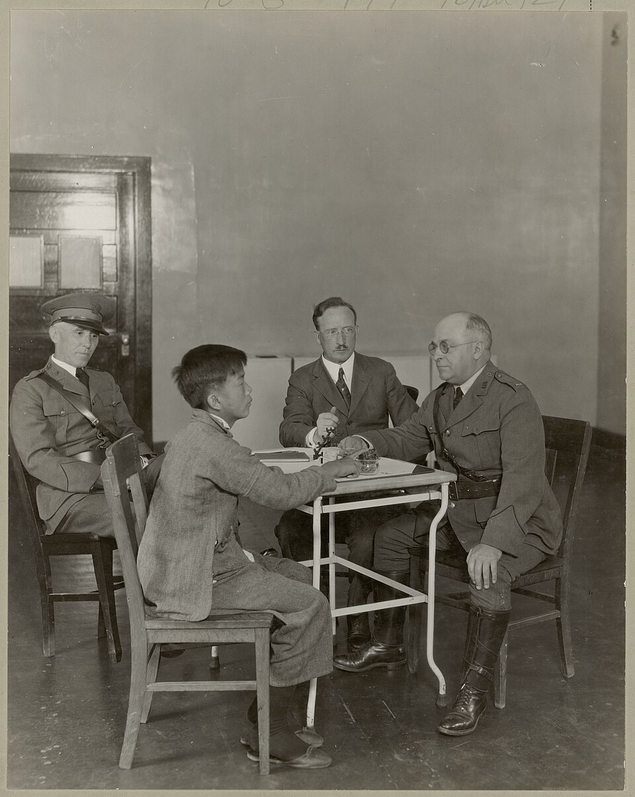

Directions: Study the photograph and the background note, then answer the questions.

Background. The Angel Island station in San Francisco Bay operated from 1910 to 1940. Under the Chinese Exclusion Act of 1882, Chinese labor immigration was suspended and Chinese residents were barred from naturalized citizenship. A Chinese arrival who claimed a legal right to enter, as a merchant or as the son of a citizen, had to prove the claim. Applicants waited in detention barracks while officials questioned them and, separately, their witnesses, then compared the answers in detail. A mismatch on a family or village fact could be treated as evidence that the claim was false.
1. What details in the photograph show that this was a formal proceeding with records, not a brief check at a doorway?
2. Why did officials question the applicant and the witnesses separately, and compare the answers so closely?
3. Contrast this scene with arrival at Ellis Island. Give two specific differences in what an arrival experienced.
4. Define nativism in your own words, then name one law from this lesson that nativist pressure helped to produce and state what the law did.
1. What details in the photograph show that this was a formal proceeding with records, not a brief check at a doorway? The applicant sits across a desk or table from uniformed officials, with papers and record keeping in front of them, indoors, in a seated interview arranged for the purpose. Students should cite visible details: the officials in uniform, the seated face to face arrangement, and the documents on the desk. [Blueprint 7]
2. Why did officials question the applicant and the witnesses separately, and compare the answers so closely? Because the claim itself was on trial. Under exclusion, a Chinese arrival had no general right to enter and had to prove an exempt status. Separate questioning was the test officials used: a genuine family should give matching accounts of the family and village, and a mismatch could be used as evidence that the claimed relationship was invented, as in a paper son claim. [Blueprint 7]
3. Contrast this scene with arrival at Ellis Island. Give two specific differences in what an arrival experienced. Any two. Time: hours at Ellis Island against weeks and often months of detention at Angel Island. Questioning: standard questions checked against a manifest written at departure against detailed separate interrogation of applicant and witnesses. Setting: a moving line through a registry room against barracks detention while a case was decided. Presumption: most Europeans were admitted unless a specific ground for exclusion appeared, while Chinese arrivals had to prove a right to enter. [Blueprint 7]
4. Define nativism in your own words, then name one law from this lesson that nativist pressure helped to produce and state what the law did. Nativism is a policy or attitude favoring native-born residents over immigrants. Laws: the Chinese Exclusion Act of 1882 (suspended Chinese labor immigration and barred Chinese residents from naturalized citizenship); the 1885 contract labor law; the 1917 literacy test and Asiatic barred zone; or the 1921 and 1924 quota laws that cut immigration and gave the smallest quotas to southern and eastern Europeans. [Blueprint 7]
Teacher note. This check is formative. The common weak answer on question 2 says officials were checking health or paperwork in general. Push students to the structure of exclusion: the burden of proof sat on the arrival, and the interview was how that burden was enforced.